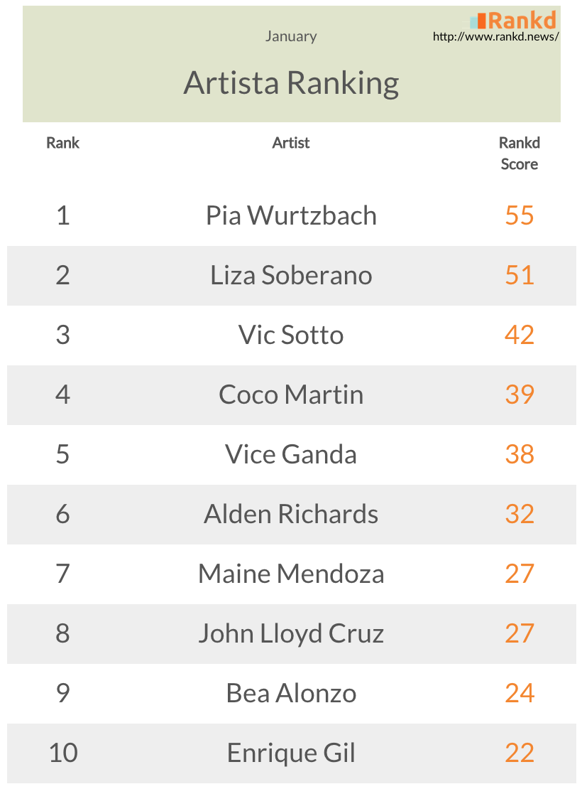

Top 10 Most Popular Celebrities in the Philippines (January)
February 2016There's another reason for Pia Wurtzbach to be confidently beautiful, as she reigned the number 1 spot last January! The Rankd Score™ was calculated using Rankd special algorithm that gathers all news mentions from top online media sources, social media virality (including likes, shares and comments), and compare them with a database of over 1,000 Philippine celebrities.
Her much-awaited grand homecoming parade after that awkward moment during the Miss Universe 2015 coronation night generated the biggest buzz last month. This was warmly received by Philippine media and fans, who are all excited to finally see the most beautiful woman in the universe.
She was immediately followed by Liza Soberano, who celebrated her bohemian-themed debut last January 4. Meanwhile, her 'Forevermore' partner 'Enrique Gil' ranked 10 in the list, with their 'Dolce Amore' picking up their buzz prior to their pilot run this February 15.
Vic Sotto's star-studded wedding last January 30 placed him in the 3rd spot, further boosted by his 'Eat Bulaga' family constantly talking about this grand celebration. FPJ's Ang Probinsyano star Coco Martin followed Vic at #4 after his successful transformation from that strong and manly Cardo into being a beautiful and sexy Paloma.
AlDub couple Alden Richards and Maine Mendoza are still creating buzz 7 months after their first split-screen meetup, ranking at numbers 6 and 7, respectively, thanks to their daily exposure in their Kalye Serye. 'One More Chance' loveteam John Lloyd Cruz and Bea Alonzo summed up the list at rank 8 and 9, this time due to the increasing speculations on them being in a relationship after their recent breakups (and the fans just can't stop fantasizing about it!).